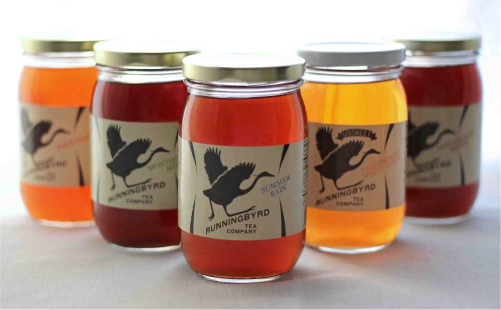

Runningbyrd Tea Company makes full-flavored seasonal teas. Sold in pint-sized mason jars, Runningbyrd teas are perfect for enjoying at a picnic, when preparing food from your recent trip to the local market, as a mixer, or as a paired non-alcoholic option in place of wine or craft beer.
Flavors
Runningbyrd Tea is not just about flavor or refreshment. Runningbyrd Tea is about the experience of drinking a cool glass of tea on a hot day. It is about the memories we associate with iced tea. Runningbyrd Tea is about sitting on your front porch listening to the stories of friends and family. It is about sharing a glass of tea with your grandfather, poured from a carafe he always kept full. It is about creating your own stories, steeping your life with the flavor of your travels and experiences. Because of this focus, each Runningbyrd creation comes with a story, in the grand tradition of the storytelling South, so that no matter who you are with when drinking your tea, you have a companion.
Locations
Runningbyrd Teas can be found at the following locations: